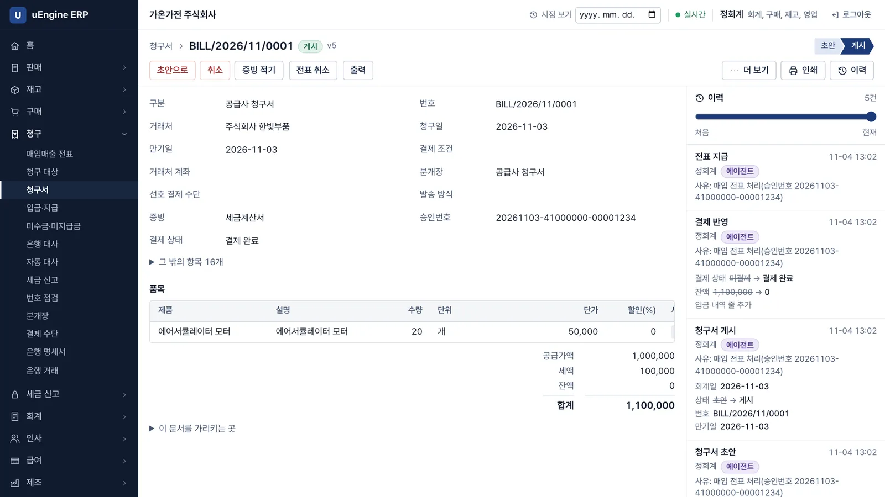
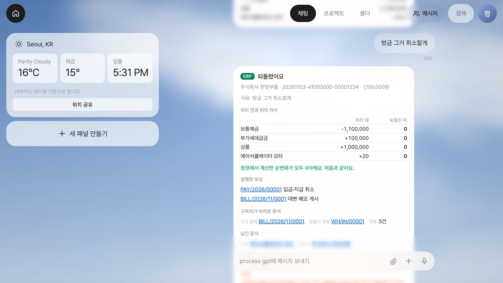
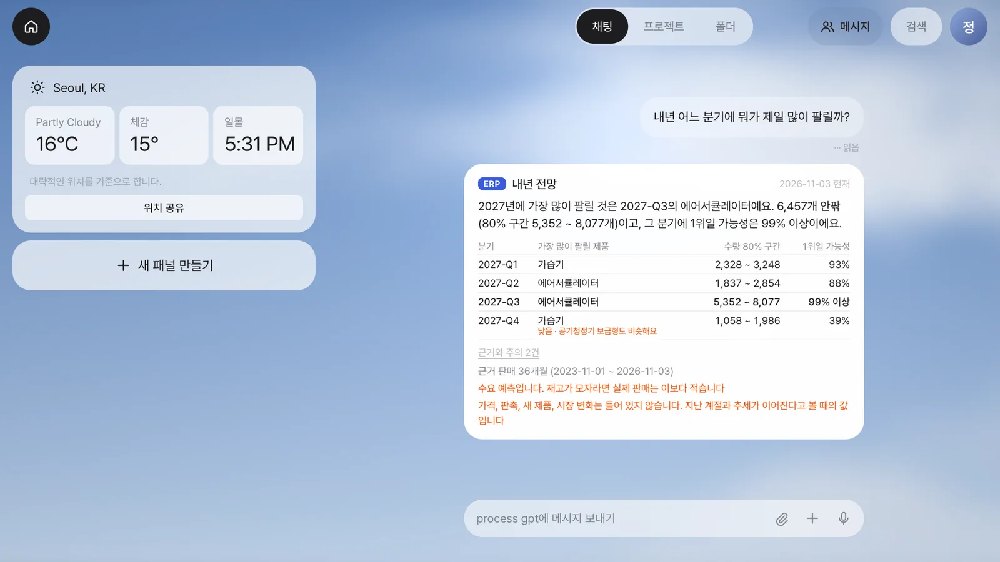
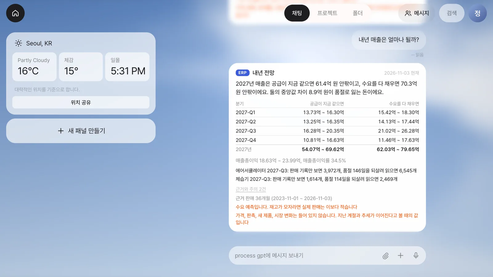
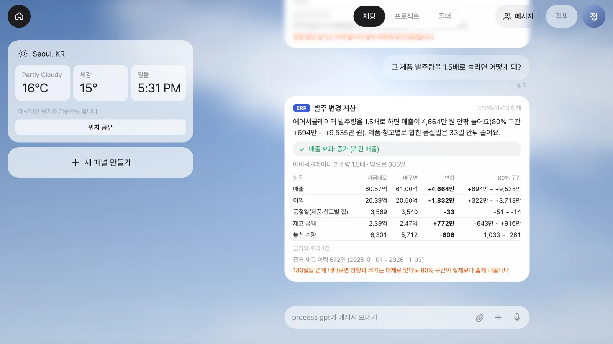
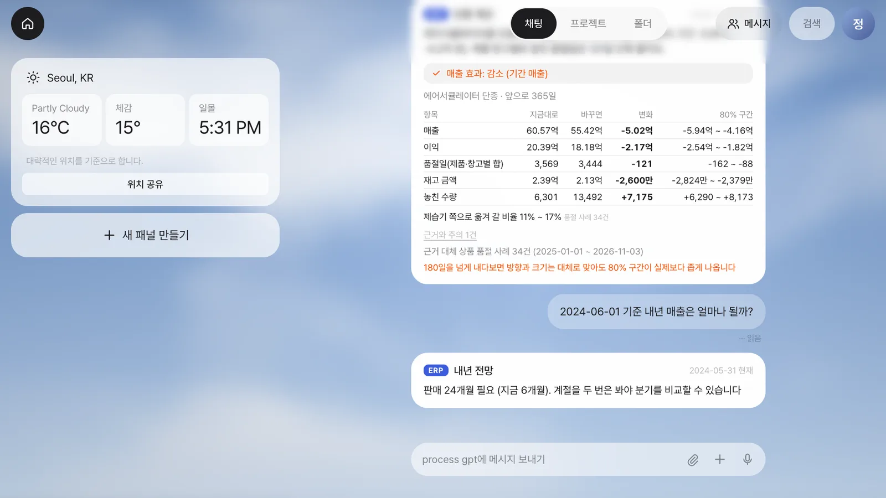

Lite 채팅에 세금계산서를 올려 전표 처리를 맡기고, 말로 취소하며, 원장에 기록된 사실로 전망을 묻습니다.
▶ 세금계산서 전표 처리와 취소 · 2:32
이 장의 흐름#
이번 장은 달빛커피가 아니라 가상 회사 가온가전의 이야기입니다. ERP는 회사의 거래, 재고, 회계 같은 업무를 함께 관리하는 시스템입니다. 앞 장들에서 메일을 읽고 문서를 만들었다면, 여기서는 에이전트가 회사 장부를 바꿉니다.
Lite 채팅에 세금계산서 올리기 → 읽은 값 확인 → ERP로 처리
↓
말로 취소 → 서버가 보상 실행
↓
전망과 조건 변경 결과를 채팅으로 묻기
원장은 거래와 변화를 기록하는 장부이며, 이벤트는 처리나 취소처럼 일어난 일을 나타내는 기록입니다. 에이전트가 장부를 바꾸므로, 실행한 작업을 추적하고 그 효과를 되돌릴 수 있는 원장이 필요합니다. 이벤트 소싱은 이런 이벤트를 남기는 방식으로, 취소할 때도 원래 기록을 지우지 않고 효과를 상쇄하는 보상 기록을 더합니다.
핵심은 두 가지입니다.
- 처리와 취소는 장부에 남습니다. 파일에서 읽은 값을 사람이 확인한 뒤 처리하고, 말로 취소하면 서버가 보상을 실행합니다. 안전하게 되돌릴 수 없는 경우에는 이유를 알리고 멈춥니다.
- 전망 질문은 장부를 바꾸지 않습니다. 언어 모델이 문장을 해석하고 ERP 분석 화면과 같은 모델이 숫자를 계산합니다. 근거가 부족하면 숫자를 내지 않습니다.
먼저 알아 둘 것
- 회사와 세금계산서는 가상입니다. 예측 영상의 가온가전(데모)은 ERP의 생성기로 만든 가상 회사이고, 숫자는 그 회사의 원장에서 계산한 값입니다. 실제 회사의 성능이 아닙니다.
- 채팅과 서버를 잇는 BFF, 언어 모델, 에이전트, 외부 도구를 연결하는 MCP 호출, ERP는 모두 실제로 실행했습니다. 로컬 환경에서 찍었습니다.
- Process GPT Lite의 ERP 연결은 개발 중인 판으로 찍었고 공개 설치본에는 아직 들어 있지 않습니다.
- 따라서 이 장은 지금 따라 하기보다 읽고 보는 장입니다. 아래 순서는 영상에서 진행한 작업을 설명합니다.
- 부가세(부가가치세)와 회계 화면은 전문가 검수 전이므로, 검수가 끝난 화면으로 받아들이지 마세요.
- 전표 처리는 정회계의 연동 키로 연결합니다. 에이전트는 연결된 구성원의 권한을 넘지 못합니다. 연결 화면은 키가 보이므로 영상에서 뺐습니다.
영상으로 보기 1 — 전표를 맡기고 말로 되돌리기#
전표는 거래 내용을 회계 장부에 반영하기 위한 기록입니다. 여기서 게시란 입력한 전표를 장부에 반영하는 일이고, 지급은 거래 대금을 내는 일입니다.
-
파일만 올리기. 말없이 세금계산서 그림을 보냅니다. 가상 회사 주식회사 한빛부품의 세금계산서로, 공급가액(세금을 제외한 거래 금액) 1,000,000, 세액 100,000, 합계 1,100,000입니다.
-
묻기. Lite가 파일에서 읽은 값을 보여 주고
ERP 전표 처리를 할까요?라고 묻습니다. 사람이 확인하고 ERP로 처리를 누릅니다.
전표 처리 묻기 -
처리. 거래처와 제품을 찾아 없으면 등록하고, 전표 입력·게시·지급을 진행합니다. 호출은 서버가 붙인 사가 번호 하나로 묶입니다. 사가는 여러 처리 단계를 하나로 묶어, 필요할 때 각 단계의 효과를 되돌리는 방식입니다.
-
결과. 이벤트를 받아 후속 작업을 하는 구독자가 입고와 회계 전표 3건, 세금 신고 집계를 이어서 만듭니다. 처리 결과를 확인한 뒤 ERP에서 읽은 변경 내용을 보여 줍니다. 보통예금(은행 예금) -1,100,000, 부가세대급금(매입할 때 지급한 부가세) +100,000, 상품 +1,000,000, 에어서큘레이터 모터 +20개입니다.

처리 결과 -
ERP에서 확인. 청구서
BILL/2026/11/0001은 게시와 결제가 완료된 상태이며, 승인번호는 그대로입니다. 이력에는 정회계와 함께 에이전트 표식이 남습니다.
ERP 청구서 -
말로 취소.
방금 그거 취소할게라고 입력합니다. 되돌린 뒤에는 처리 전과의 차이가 모두 0이 됩니다. 회사 전체 잔액이 0이라는 뜻이 아니라, 이번 거래가 만든 효과를 반대 거래로 상쇄했다는 뜻입니다.
되돌린 결과 -
보상의 내용. 보상은 언어 모델이 아닌 서버가 실행합니다. 지급 취소와 대변 메모(원래 청구 금액을 상쇄하는 문서) 게시 뒤 구독자가 반품과 회계, 신고를 반영합니다. 거래처와 제품은 남습니다. 취소에 따른 수정세금계산서는 공급자에게 요청하세요.

보상과 경고 -
원장. 이 청구서의 이벤트 8건이 그대로 있습니다. 에이전트 표식 5건, 보상 표식 3건입니다. 지운 기록은 없습니다.

이벤트 원장 -
되돌리면 안 될 때. 두 번째 세금계산서(대성정밀, 330,000)로 처리한 팬 블레이드 10개가 그사이 창고에서 출고됐습니다. 같은 말로 취소를 요청하면
되돌리지 않았어요, 재고가 음수가 된다(-10)는 이유와 다음에 할 일을 안내합니다. 일부만 취소하지 않고 장부는 그대로입니다.
되돌리지 않음
영상으로 보기 2 — 평범한 문장으로 전망 묻기#
앞에서는 회사 장부를 바꿨지만, 이제는 원장에 기록된 사실을 바탕으로 전망을 묻습니다. 언어 모델은 질문을 해석해 계산 모델과 입력값을 정하고, 숫자는 ERP 분석 화면과 같은 모델이 계산합니다. 조건을 바꾸어 결과를 살펴보는 what-if 질문도 실제 발주나 가격 변경을 실행하는 것은 아닙니다.
-
내년 어느 분기에 뭐가 제일 많이 팔릴까?2027-Q3(3분기)의 에어서큘레이터가 80% 구간 5,352 ~ 8,077개, 1위일 가능성 99% 이상입니다. Q4(4분기)의 가습기는 39%로 낮고, 공기청정기 보급형도 비슷하다고 말합니다.
내년 분기 -
내년 매출은 얼마나 될까?공급이 지금과 같으면 61.4억 원 안팎, 수요를 다 채우면 70.3억 원 안팎입니다. 차이 8.9억 원이 품절로 잃는 돈입니다. Q3의 에어서큘레이터는 판매 기록 3,972개이고, 품절 146일의 수요를 복원하면 6,545개입니다.
내년 매출 -
이 예측 믿어도 돼?2025-11-02까지의 자료만으로 2026년을 계산해 실제와 대조합니다. 끝난 분기 3개가 모두 구간 안에 들었고, 1위 제품은 2개가 맞았습니다.
예측과 실제 대조 -
그 제품 발주량을 1.5배로 늘리면 어떻게 돼?"그 제품"은 앞선 답변의 에어서큘레이터입니다. 매출 4,664만 원 안팎 증가, 전체 품절일 33일 안팎 감소, 재고 금액 772만 원 증가입니다. 앞으로 365일을 계산한 결과입니다. 180일을 넘는 전망은 구간이 실제보다 좁을 수 있으니 해석에 주의하세요.
발주 변경 -
가격을 10% 올리면?판매량이 어떻게 변할지는 기록에 없어구분할 수 없음이라고 말합니다. 대신 판매량이 19.4% 줄면 이익이 같고, 9.1% 줄면 매출이 같다는 손익 분기점, 즉 변경 전과 이익이나 매출이 같아지는 기준을 보여 줍니다. 가격 변화에 따라 판매량이 얼마나 변하는지를 나타내는 탄력성을 정해탄력성 -1.2로 가정하면?이라고 물으면 입력한 가정이라고 밝히고 계산합니다.
가격 변경 -
납기와 단종. 납기는 물건이 도착하기까지 걸리는 기간이고, 단종은 제품 공급을 중단하는 일입니다.
납기가 일주일 늘면?이라고 물으면 납기는 평균 11.0일에서 18.0일로, 매출 8.4억 원 안팎 감소입니다.이 제품을 단종하면?이라고 물으면 매출 5.0억 원 안팎 감소이고, 제습기 쪽으로 옮겨 갈 비율 11% ~ 17%는 품절 사례 34건에서 추정했습니다. -
근거가 모자랄 때.
2024-06-01 기준 내년 매출은 얼마나 될까?에는 숫자를 내지 않고판매 24개월 필요 (지금 6개월)이라고 말합니다.
근거 부족 -
원장은 그대로입니다. 질문만 했으므로 새 이벤트가 없습니다. 시작과 끝의 원장 건수가 같습니다.
이 예측을 가상 회사 60곳에서 검증하면 분기 매출 오차 중앙값 6.6%, 80% 구간이 실제 매출을 담은 비율 91%, 1위 제품이 실제 수요 1위인 비율 75%입니다. 생성기와 추정기가 가정을 공유하므로 실제 회사에서는 예측 성능이 이보다 낮을 것으로 보아야 합니다.
확인 문제#
-
이 장의 ERP 연결을 공개 설치본에서 바로 따라 할 수 있나요?
정답 보기
아니요. 개발 중인 판으로 촬영했으며 공개 설치본에는 아직 들어 있지 않습니다. 지금은 영상과 설명을 읽고 보는 장입니다. -
방금 그거 취소할게라고 하면 누가 되돌리며, 원래 기록은 어떻게 되나요?정답 보기
언어 모델은 말을 해석하고, 보상은 서버가 실행합니다. 원래 기록을 지우지 않고 반대 거래로 효과를 상쇄하며, 처리와 보상을 모두 원장에 남깁니다. 순변화가 0이라는 것은 이번 거래의 효과가 상쇄됐다는 뜻입니다. -
처리한 물건이 그사이 출고되어 취소하면 재고가 음수가 되는 경우에는 어떻게 하나요?
정답 보기
일부만 취소하지 않고 장부를 그대로 둡니다. 되돌리지 않은 이유와 다음에 할 일을 안내합니다. -
전망 질문에 답하는 숫자는 어디서 나오며, 질문하면 원장이 바뀌나요?
정답 보기
언어 모델이 질문에서 모델과 입력값을 정하면, ERP 분석 화면과 같은 모델이 원장의 사실로 계산합니다. 근거가 부족하면 숫자를 내지 않습니다. 이 장의 전망과 조건 변경 질문으로는 새 이벤트가 생기지 않습니다.
ERP를 더 알고 싶다면#
다음 장은 8부의 세 번째 예시입니다. AWS Labs의 AI-DLC로 일하는 소프트웨어 개발 팀의 진행 상황과 사람 대기를 Lite 홈 패널로 확인합니다(31장).